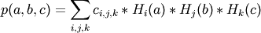

numpy.polynomial.hermite.hermgrid3d¶
- numpy.polynomial.hermite.hermgrid3d(x, y, z, c)¶
Evaluate a 3-D Hermite series on the Cartesian product of x, y, and z.
This function returns the values:

where the points (a, b, c) consist of all triples formed by taking a from x, b from y, and c from z. The resulting points form a grid with x in the first dimension, y in the second, and z in the third.
The parameters x, y, and z are converted to arrays only if they are tuples or a lists, otherwise they are treated as a scalars. In either case, either x, y, and z or their elements must support multiplication and addition both with themselves and with the elements of c.
If c has fewer than three dimensions, ones are implicitly appended to its shape to make it 3-D. The shape of the result will be c.shape[3:] + x.shape + y.shape + z.shape.
Parameters : x, y, z : array_like, compatible objects
The three dimensional series is evaluated at the points in the Cartesian product of x, y, and z. If x,`y`, or z is a list or tuple, it is first converted to an ndarray, otherwise it is left unchanged and, if it isn’t an ndarray, it is treated as a scalar.
c : array_like
Array of coefficients ordered so that the coefficients for terms of degree i,j are contained in c[i,j]. If c has dimension greater than two the remaining indices enumerate multiple sets of coefficients.
Returns : values : ndarray, compatible object
The values of the two dimensional polynomial at points in the Cartesian product of x and y.
See also
Notes

Previous topic
numpy.polynomial.hermite.hermgrid2d
Next topic
numpy.polynomial.hermite.hermroots